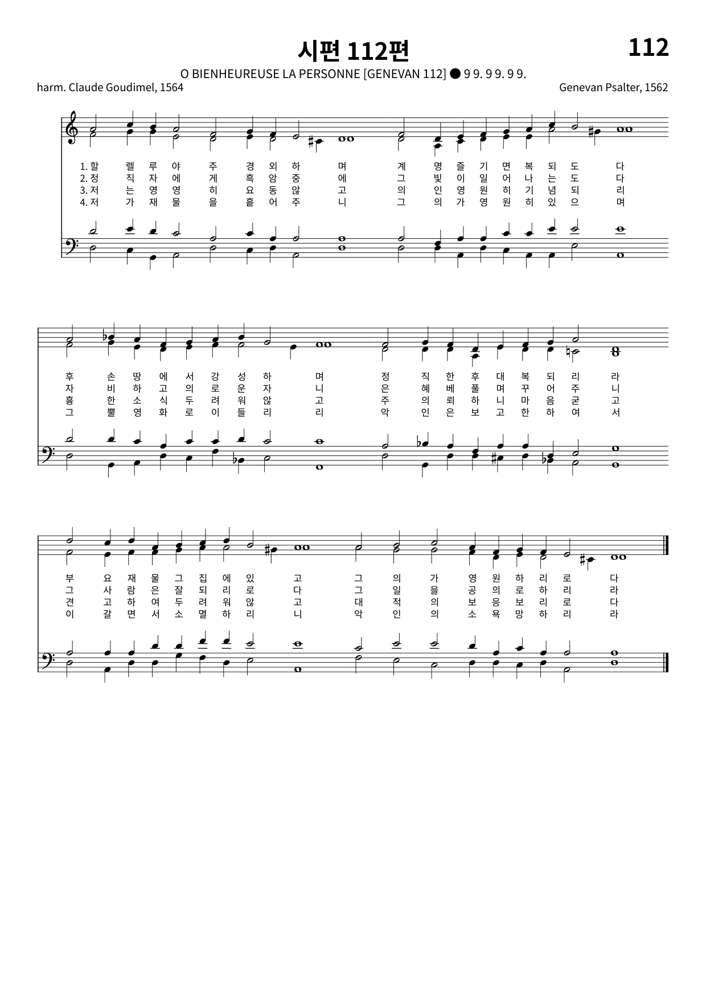

Psalm 112
O BIENHEUREUSE LA PERSONNE [GENEVAN 112] · 9 9. 9 9. 9 9.
English title: Come, Praise the LORD; Let All Revere Him
Tune: Genevan Psalter, 1562 · Harmony: Claude Goudimel, 1564 · Lyrics: Korean adaptation of Psalm 112 from the Korean Revised Version (AI draft adaptation · not yet theologically reviewed) · 4 stanzas
Score PDF MusicXML (for printing) MusicXML (for accompaniment, with prelude and repeats) Read Psalm 112 (Korean Revised Version)
Score
← Psalm 111 ListAccompaniment (in preparation)Psalm 113 →
Lyrics (Korean)
Stanza 1
할렐루야 주 경외하며
계명 즐기면 복되도다
후손 땅에서 강성하며
정직한 후대 복되리라
부요 재물 그 집에 있고
그 의가 영원하리로다
할렐루야 주 경외하며
계명 즐기면 복되도다
후손 땅에서 강성하며
정직한 후대 복되리라
부요 재물 그 집에 있고
그 의가 영원하리로다
Stanza 2
정직자에게 흑암 중에
그 빛이 일어나는도다
자비하고 의로운 자니
은혜 베풀며 꾸어주니
그 사람은 잘 되리로다
그 일을 공의로 하리라
정직자에게 흑암 중에
그 빛이 일어나는도다
자비하고 의로운 자니
은혜 베풀며 꾸어주니
그 사람은 잘 되리로다
그 일을 공의로 하리라
Stanza 3
저는 영영히 요동 않고
의인 영원히 기념되리
흉한 소식 두려워 않고
주 의뢰하니 마음 굳고
견고하여 두려워 않고
대적의 보응 보리로다
저는 영영히 요동 않고
의인 영원히 기념되리
흉한 소식 두려워 않고
주 의뢰하니 마음 굳고
견고하여 두려워 않고
대적의 보응 보리로다
Stanza 4
저가 재물을 흩어 주니
그 의가 영원히 있으며
그 뿔 영화로이 들리리
악인은 보고 한하여서
이 갈면서 소멸하리니
악인의 소욕 망하리라
저가 재물을 흩어 주니
그 의가 영원히 있으며
그 뿔 영화로이 들리리
악인은 보고 한하여서
이 갈면서 소멸하리니
악인의 소욕 망하리라